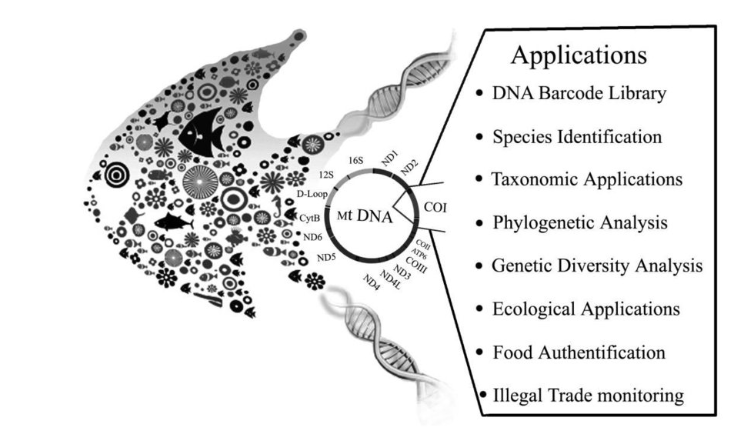
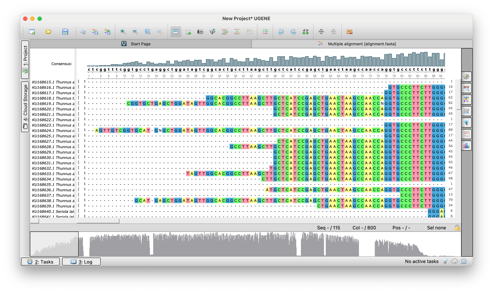
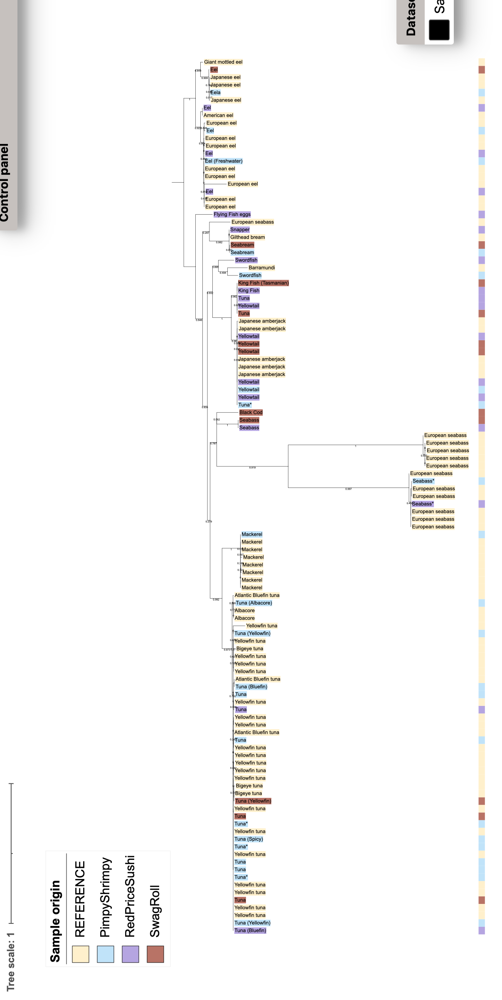

conda activate py3_study
pip install biopython==1.83 scikit-bio==0.6.1 pandas==2.2.2
conda install bioconda::mafft
mafft --version
conda install bioconda::fasttree
FastTree -help | head -n 23 Филогенетика (практика)
Практика по ноутбуку
3.1 Введение
Ген, кодирующий Цитохромоксидазу подкомплекс I (COI), широко используется как стандартный ген для ДНК-баркодирования у рыб: он, с одной стороны, сравнительно консервативен и, с другой, содержит достаточно вариаций между видами, что позволяет в большинстве случаев успешно идентифицировать таксоны.
COI применяется для обнаружения подмены рыб и признан удобным для мониторинга видов в пищевой промышленности.

Однако, COI не всегда хорошо разделяет некоторые виды рыб, например, такое может произойти с тунцом (например, виды T. albacares - yellowfin tuna, T. thynnus - bluefin tuna и Thunnus obesus - bigeye tuna) (Viñas and Tudela 2009)
Одна из возможных причин: гибридизация и последующая митохондриальная интрогрессия (ситуация, когда мтДНК одного вида переходит в другой вид через гибридизацию, и затем закрепляется в его популяции).
В рамках ноутбука можно научиться следующему:
определять возможное происхождение последовательности на основе топологии филогенетиечского дерева
строить базовое множественное выравнивание (MAFFT) и филогегетическое дерево (FastTree), используя командную строку
выгружать нуклеотидные последовательности из NCBI, подавая на вход список из GenBank айди
генерировать аннотационные файлы для визуализации дерева в ITOL
осущеставлять базовые манипуляции с деревом в ITOL
3.2 Install dependencies
Biopython, Scikit-bio, pandas, mafft, FastTree
Gblocks (trimAI) - находит консервативные блоки в выравнивании
conda install bioconda::gblocksimport pandas as pd, io
#from google.colab import files
from Bio import AlignIO
import numpy as np
from Bio.Seq import Seq
from Bio import Entrez, SeqIO
from Bio.Align import MultipleSeqAlignment
import shutil
from Bio.Phylo.TreeConstruction import DistanceCalculator, DistanceTreeConstructor
from Bio import Phylo
import subprocess, re3.3 Load metadata
git clone https://github.com/rybinaanya/fish_detective.gitmeta = pd.read_csv('fish_detective/metadata.tsv', sep='\t', index_col=0)
meta.head() sample_id accession ... display_name restaurant_color
0 S001 KU168615 ... Albacore #FFF1CB
1 S002 KU168616 ... Albacore #FFF1CB
2 S003 KU168617 ... Tuna (Albacore) #C2E2FA
3 S004 KU168618 ... Tuna (Bluefin) #C2E2FA
4 S005 KU168619 ... Tuna (Bluefin) #B7A3E3
[5 rows x 9 columns]Distribution of claimed names
meta.claimed_name.value_counts()claimed_name
Tuna 31
Eel 15
Seabass* 13
Yellowtail 12
Mackerel 8
Tuna (Yellowfin) 6
Tuna* 4
Seabream 3
Tuna (Albacore) 3
Tuna (Bluefin) 2
Swordfish 2
Seabass 2
Tuna (Spicy) 1
Tunaa 1
Eel (grilled) 1
Eel (Freshwater)a 1
Eel* 1
Eel (Freshwater) 1
Seabassa 1
Eela 1
King Fish 1
King Fish (Tasmanian) 1
Barramundia 1
Black Cod 1
Flying Fish eggs 1
Snapper 1
Name: count, dtype: int64Distribution of restaurants
meta.restaurant.value_counts()restaurant
REFERENCE 67
PimpyShrimpy 21
RedPriceSushi 16
SwagRoll 11
Name: count, dtype: int643.4 Get sequences from NCBI
> fish_detective/sequences.fasta
tail -n +2 fish_detective/metadata.tsv | \
while IFS=$'\t' read -r line; do
# Разбиваем строку на массив
IFS=$'\t' read -ra cols <<< "$line"
accession=${cols[2]}
[ -z "$accession" ] && continue # если значение пустое - пропусти
echo "Скачиваю $accession ..."
efetch -db nucleotide -id "$accession" -format fasta >> fish_detective/sequences.fasta
echo '' >> fish_detective/sequences.fasta
done
3.5 Multiple sequqnce alignment MAFFT - итеративный алгоритм
mafft --auto --thread -1 fish_detective/sequences.fasta \
> fish_detective/alignment.fasta 2> mafft.log
Видно, что в начале и в конце много пропусков. Мы хотим их обрезать.
BMGE -i fish_detective/alignment.fasta -t AA -m BLOSUM30 \
-of fish_detective/alignment.trim.fasta Amino acid sequence alignment alignment.fasta
before : 115 sequences / 811 characters
0.00%
12.33%
24.66%
36.99%
49.32%
61.65%
73.98%
86.31%
98.64%
after : 115 sequences / 456 characters
after : 115 sequences / 456 characters3.6 FastTree (~ML) and NJ-methods
FastTree -gtr -nt -gamma -boot 1000 fish_detective/alignment.trim.fasta \
> fish_detective/tree_fasttree.nwk
echo "FastTree → tree_fasttree.nwk"FastTree Version 2.2.0 Double precision
Alignment: fish_detective/alignment.trim.fasta
Nucleotide distances: Jukes-Cantor Joins: balanced Support: SH-like 1000
Search: Normal +NNI +SPR (2 rounds range 10) +ML-NNI opt-each=1
TopHits: 1.00*sqrtN close=default refresh=0.80
ML Model: Generalized Time-Reversible, CAT approximation with 20 rate categories
Ignored unknown character X (seen 22 times)
Initial topology in 0.01 seconds
Refining topology: 25 rounds ME-NNIs, 2 rounds ME-SPRs, 13 rounds ML-NNIs
0.10 seconds: ME NNI round 9 of 25, 1 of 75 splits
Total branch-length 3.183 after 0.19 sec
0.21 seconds: ML NNI round 1 of 13, 1 of 75 splits
ML-NNI round 1: LogLk = -5062.748 NNIs 24 max delta 2.87 Time 0.29
0.31 seconds: Optimizing GTR model, step 3 of 12
0.42 seconds: Optimizing GTR model, step 10 of 12
GTR Frequencies: 0.2338 0.2806 0.1799 0.3056
GTR rates(ac ag at cg ct gt) 1.8216 4.7233 1.9546 0.8528 4.5305 1.0000
Switched to using 20 rate categories (CAT approximation)
Rate categories were divided by 0.819 so that average rate = 1.0
CAT-based log-likelihoods may not be comparable across runs
0.52 seconds: ML NNI round 2 of 13, 1 of 75 splits
ML-NNI round 2: LogLk = -4400.815 NNIs 21 max delta 0.35 Time 0.61
ML-NNI round 3: LogLk = -4400.651 NNIs 19 max delta 0.00 Time 0.69
Turning off heuristics for final round of ML NNIs (converged)
0.68 seconds: ML NNI round 4 of 13, 1 of 75 splits
ML-NNI round 4: LogLk = -4400.536 NNIs 14 max delta 0.00 Time 0.79 (final)
0.78 seconds: ML Lengths 1 of 75 splits
Optimize all lengths: LogLk = -4400.532 Time 0.81
0.94 seconds: Site likelihoods with rate category 1 of 20
Gamma(20) LogLk = -4622.464 alpha = 0.664 rescaling lengths by 1.211
Total time: 0.97 seconds Unique: 77/115 Bad splits: 0/74
FastTree → tree_fasttree.nwkСначала мы получаем NJ-like tree (distnace matrix - is based on susbtitution model JC). А потом перебираем не все топологии, а либо отрубаем кусочек дерева и снова пристыковаваем и смотрим на правдоподбие / пошафлить перетасовать узлы в пределах клады и также чекнуть правдоподбие
-gtr - использование модели эволюции GTR (General Time Reversible) для нуклеотидных последовательностей
-gamma - учет различной скорости эволюции разных позиций с помощью гамма-распределения
from Bio.Phylo.TreeConstruction import DistanceCalculator,DistanceTreeConstructor
from Bio import PhyloNJ (p-distance = 1-identity)
aln = AlignIO.read("fish_detective/alignment.trim.fasta","fasta")
# compute p-distance = 1-identity
calc = DistanceCalculator('identity')
# create NJ tree nased on pairwise distance matrix
constructor = DistanceTreeConstructor(calc, 'nj')
tree_nj = constructor.build_tree(aln)
# write output to a file
_ = Phylo.write(tree_nj, "fish_detective/tree_nj.nwk", "newick")3.7 ITOL files
Теперь визуализируем дерево в ITOL
Чтение Newick дерева и получение названий листьев
tree_fasttree = Phylo.read('fish_detective/tree_fasttree.nwk', 'newick')
tips_fasttree = [t.name for t in tree_fasttree.get_terminals()]
print(tips_fasttree[:5])['KU168646.1', 'KU168622.1', 'KU168632.1', 'KU168644.1', 'KU168624.1']Создание словаря для преобразования ID в читаемые метки и создание файлов меток и цветов для iTOL в нужном формате
tips2label=dict(zip(meta.accession, meta.display_name))
with open('fish_detective/labels.txt', 'w') as f:
_ = f.write('\n'.join(['LABELS', 'SEPARATOR COMMA', 'DATA'])+'\n')
for tip in tips_fasttree:
clean_tip = tip.split('.')[0]
_ = f.write(f"{tip},{tips2label[clean_tip]}\n")
acc2color = dict(zip(meta['accession'], meta['restaurant_color']))
with open('fish_detective/color_labels.txt', 'w') as f:
_ = f.write('TREE_COLORS\nSEPARATOR COMMA\nDATA\n')
for tip in tips_fasttree:
clean_tip = tip.split('.')[0]
color = acc2color.get(clean_tip, '#CCCCCC')
_ = f.write(f'{tip},label_background,{color}\n')Annotation file to color labels
mapLoc2color = dict(zip(meta.restaurant, meta.restaurant_color))
tips2color=dict(zip(meta.accession, meta.restaurant_color))
with open('fish_detective/colorstrip_groups.txt', 'w') as f:
_ = f.write('DATASET_COLORSTRIP\n')
_ = f.write('SEPARATOR COMMA\n')
_ = f.write('DATASET_LABEL,Sample groups\n')
_ = f.write('COLOR,#000000\n') # рамка dataset-а (опц.)
_ = f.write('LEGEND_TITLE,Sample origin\n')
_ = f.write('LEGEND_SHAPES,1,1,1,1\n') # форма значков (1=квадрат)
_ = f.write('LEGEND_COLORS,' + ','.join(mapLoc2color.values()) + '\n')
_ = f.write('LEGEND_LABELS,' + ','.join(mapLoc2color.keys()) + '\n')
_ = f.write('DATA\n')
for tip in tips_fasttree:
clean_tip = tip.split('.')[0]
_ = f.write(f'{tip},{tips2color[clean_tip]}\n')To upload annotation files, go to Datasets, push Upload button
To make ITOL display bootstrap values, go to Advanced -> Branch metadata display > Bootstraps/metadata -> select Display -> select Text
Чтобы укоренитрь дерево - наведите мышкой на нужную ветку -> клик -> Tree structure -> Re-root tree here

Viñas, Jordi, and Sergi Tudela. 2009. “A Validated Methodology for Genetic Identification of Tuna Species (Genus Thunnus).” Edited by Manfred Kayser. PLoS ONE 4 (10): e7606. https://doi.org/10.1371/journal.pone.0007606.